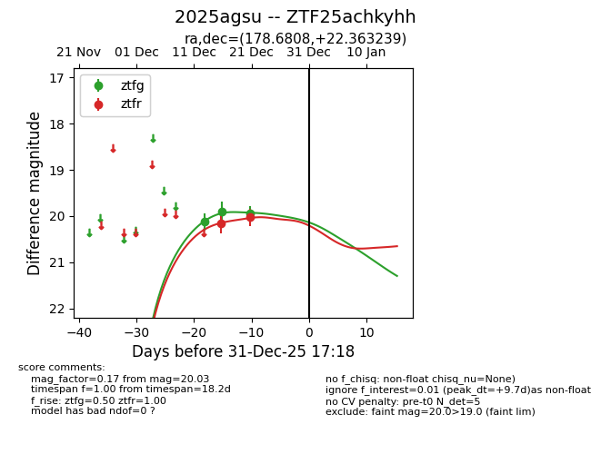
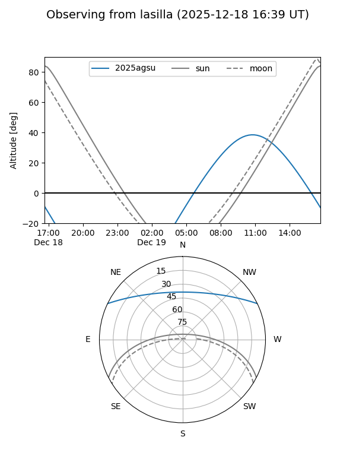
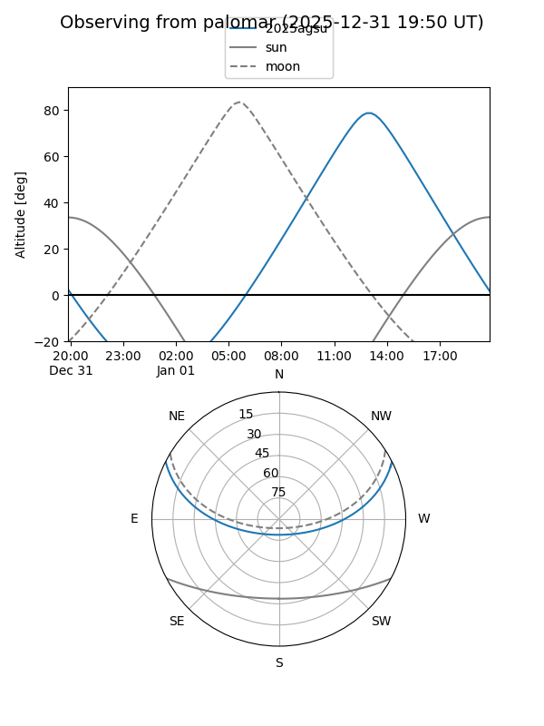

2025agsu
Target 2025agsu at 2026-01-09 12:49
Aliases and brokers:
FINK: link
Lasair: link
ALeRCE: link
TNS: link
YSE: link
alt names
ZTF25achkyhh (ztf,fink_ztf)
2025agsu (tns,yse)
Coordinates:
equatorial (ra, dec) = 178.6808,+22.36324
equatorial (HMS+DMS) = 11:54:43.38,+22:21:47.66
galactic (l, b) = (230.1555,+76.28103)
Flags:
Photometry:
last ztfg=19.94, ztfr=20.03
3 ztfg, 2 ztfr detections
Lightcurve

Visibility


Additional plots